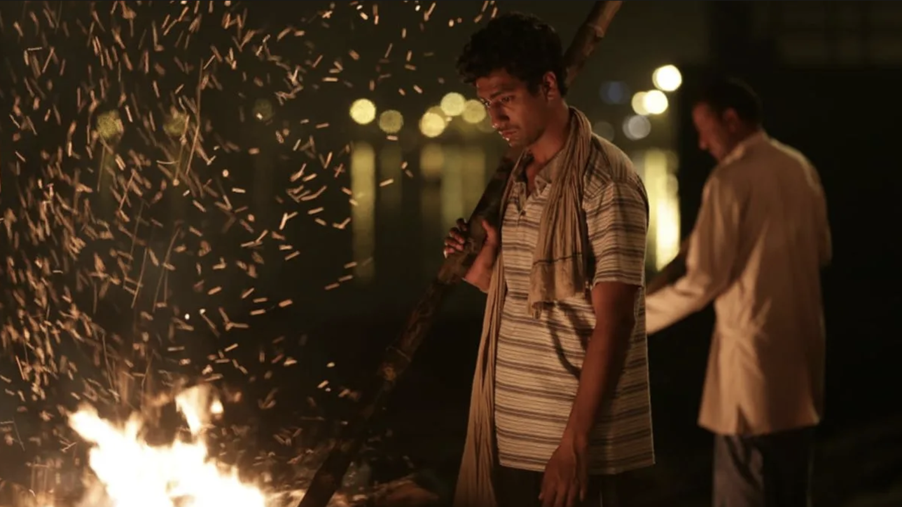
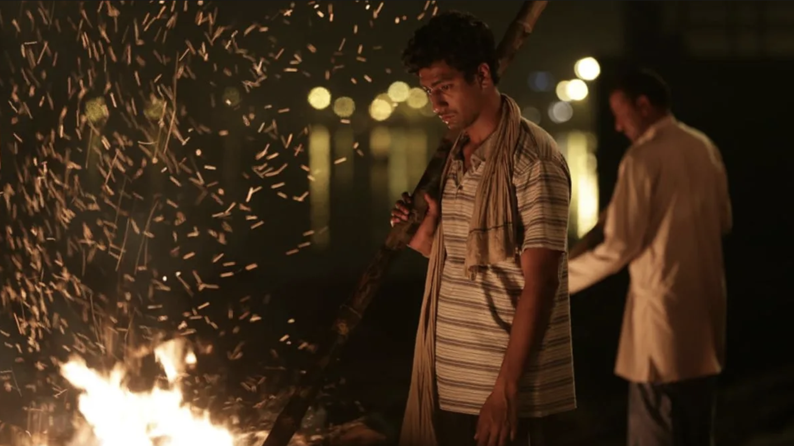

MASAAN
Country/ Countries: India
Language(s): Hindi
Director: Neeraj Ghaywwanwas
Starring: Vicky Kaushal, Richa Chadha, Shweta Tripathi, Sanjay Mishra
Synopsis
Banares, the holy city on the banks of the Ganges, reserves a cruel punishment for those who play with moral traditions. Deepak, a young man from a poor neighbourhood, falls hopelessly in love with a young girl from a different caste. Devi, a young student who’s gone off the rails, is tortured by feelings of guilt following the disappearance of her first lover. Devi’s father Pathak, a victim of police corruption, has lost his moral compass because of money, while a young boy, Jhonta, is in search of a family. These characters are all seeking a better future, whilst buffeted between the demands of modern life and an attachment to tradition. And their paths are about to cross…
Insight on the film
Masaan is about the struggles of the common people as they wade through a highly self-righteous society, through casteism and financial vulnerabilities for a glimpse of hope for their future. Masaan means crematorium. All the characters in the movie cremate their past so that they could resurrect into a new life.
What I loved
There are three parts to the movie; The Grieving Lover, Unresolved Grief and the The Guilty Lover.
Each sub story explores finding closure in different ways and closures of different forms. But the one i
connected to and felt true to my experiences was that of unresolved gried between a father and his
daughter.
This story centers on the fractured relationship between father Vidyadhar (Sanjay Mishra) and daughter
Devi (Richa Chadda). When a corrupt cop catches them in a vulnerable moment, he blackmails them for a
hefty bribe. As they navigate this crisis, Vidyadhar's frustration grows while he struggles to find a
way to pay the bribe. Their past resurfaces, revealing an unresolved rift that formed after the death of
his wife, leaving them emotionally estranged. ***A lack of closure on the problems resulted in a
fractured bond.*** Confronted by their challenges, Devi realizes her father's love and sacrifices, while
Vidyadhar understands the need to let her pursue a brighter future beyond Varanasi.
Brief on production
Director: Neeraj Ghaywwanwas inspired to make the film when a friend told him about the cremation
ghats in Benares, where dead bodies are burnt per Hindu culture. He pictured a young orphaned boy on the
burning ghats of Benares who spends his time burning bodies. His banal life becomes exciting when he
sees the priest’s young daughter and falls in love with her. One day his boss gives him three bodies to
burn, and one of them is that of the girl.
He grew up watching the great movies of Satyajit Ray, Guru Dutt and Shyam Benegal. Although he couldn’t
appreciate them much in his formative years they had
an impact on the kind of stories and styles he would experiment in the future. The director talks about
his admiration for Shekhar Kapur, Anurag Kashyap, Vikramaditya Motwane, Vishal Bharadwaj and Dibakar
Banerjee. In terms of Western cinema,
He finds himself drawing inspiration from Bergman, Fellini, Haneke, Inarritu and the
Dardenne brothers.
Screenwriting: Despite having a stellar cast and a great musical score (which most individuals focus
on) the genius actually comes from the writers. Highly accomplished and hugely popular Neeraj Ghaywan
and Varun Grower do a brilliant job of representing a human being’s greatest emotional requirement of
closure.
The movie strongly tells that there will be days when you will feel that things aren’t on the right
path and we will be on our knees, weak to fight with society and its norms. but those are the days when
we have to get up and fight with this feeling because in the end all it counts is what we are made up
of. The encounter with death, loss, defeat,love and self realization is poured up in the movie.
Music of Masaan
Reviews
Stills


 
